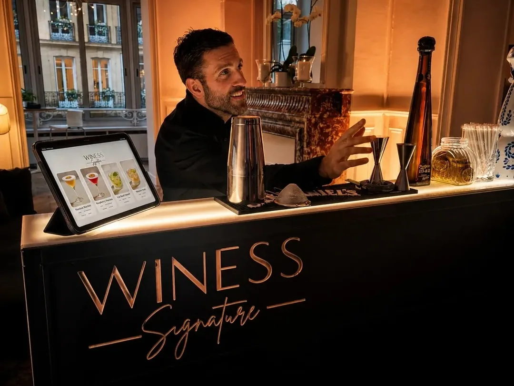
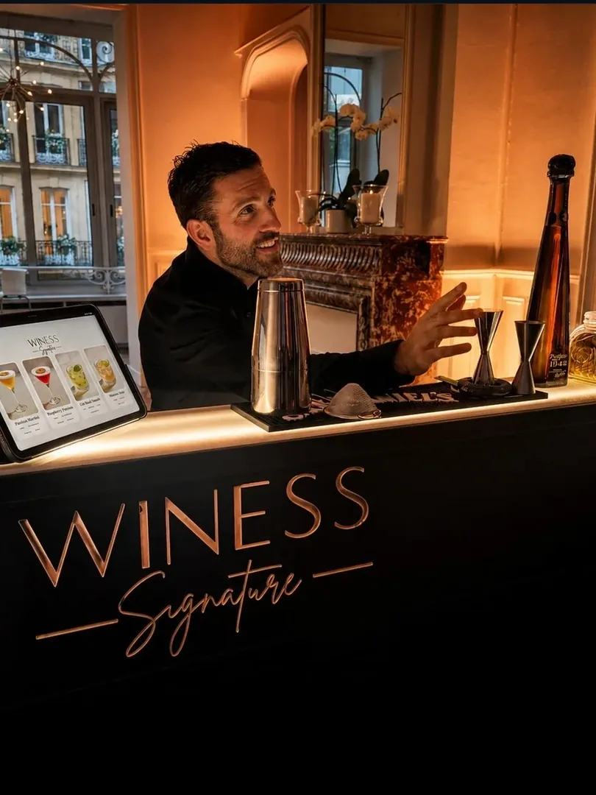
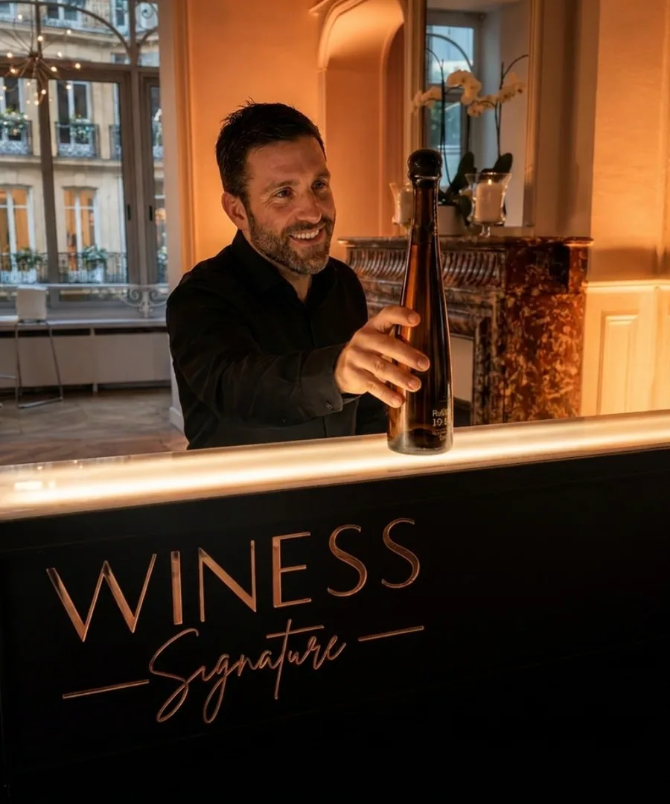

Bar à cocktails Paris
Une carte courte et maîtrisée, des préparations minute, du matériel professionnel et une présentation soignée pour un service vivant.

Un comptoir élégant, des bartenders professionnels et une carte de cocktails ou de vins conçue pour donner du rythme à votre réception.
Demander un devisWINESS Signature transforme un appartement, une salle de réception, un rooftop, un showroom ou un espace d’entreprise en véritable bar événementiel. Notre service de bar mobile à Paris réunit le comptoir, le matériel professionnel, l’organisation du poste et le savoir-faire humain nécessaire à un service fluide. L’objectif n’est pas seulement de servir des boissons : il s’agit de créer un point de rencontre élégant, visible et vivant au cœur de votre événement.
Chaque projet commence par une lecture précise de votre réception : nombre d’invités, horaires, accès, espace disponible, profil des participants et ambiance recherchée. Cette préparation permet de dimensionner le nombre de bartenders, le matériel et la configuration du bar. Le jour venu, notre équipe installe le poste, organise les consommables et prépare le service avant l’arrivée de vos invités. Vous profitez ainsi d’une solution claire, sans avoir à coordonner séparément le comptoir, les ustensiles et l’animation.

Une prestation réussie repose sur une carte lisible et adaptée au rythme de la soirée. Nous vous accompagnons dans le choix de cocktails connus, de créations plus personnelles et d’un mocktail afin que chaque invité trouve une proposition qui lui correspond. Les recettes sont préparées à la minute par un bartender à Paris, avec une attention portée à la régularité, à la présentation et à la rapidité de service.
La sélection tient compte de la saison, du format de votre événement et de votre univers. Pour un mariage, la carte peut accompagner le cocktail d’accueil puis la soirée. Pour une entreprise, elle peut reprendre les couleurs d’une marque ou rester volontairement sobre. Cette approche rend l’animation cocktail cohérente avec l’ensemble de la réception, plutôt qu’ajoutée comme un élément isolé.
Une carte courte et maîtrisée, des préparations minute, du matériel professionnel et une présentation soignée pour un service vivant.
Une sélection définie selon le repas, le moment de dégustation et le profil des invités, avec conseil et service professionnel.
Cocktails, mocktail et vins peuvent être réunis dans une même organisation lorsque le déroulé et le nombre d’invités le permettent.
Le bar à vin apporte une tonalité plus calme et conversationnelle, tandis que le cocktail crée un geste visuel et une animation immédiate. Nous pouvons vous aider à choisir la formule la plus pertinente selon votre réception. Cette souplesse convient aussi bien à un dîner privé qu’à une inauguration où différents temps de service se succèdent.

Le bar mobile s’adapte aux événements privés comme aux formats professionnels. Mariage, anniversaire, Bar Mitsvah, Bat Mitsvah, soirée privée, remise de diplôme ou pool party : nous préparons une organisation adaptée à l’âge des invités, au rythme de la fête et aux contraintes du lieu. Pour une entreprise, WINESS Signature intervient lors d’une inauguration, d’un lancement, d’un cocktail clients ou d’une soirée interne.
Nous échangeons avec votre salle, votre traiteur ou votre organisateur lorsque cette coordination est utile. L’emplacement du bar, les besoins électriques, les accès et l’horaire d’installation sont confirmés en amont. Cette méthode réduit les imprévus et garantit un service plus serein, depuis la première commande jusqu’au nettoyage du poste.
Basée au 42 Rue des Acacias, 75017 Paris, notre équipe intervient dans les arrondissements parisiens et dans les communes proches, notamment Neuilly-sur-Seine, Levallois-Perret, Boulogne-Billancourt, Vincennes, Saint-Mandé et Courbevoie. Les conditions de déplacement sont précisées dans votre proposition, car elles dépendent du lieu exact, des horaires, du stationnement et de l’accès au site.
La Formule Signature commence à 1 490 € TTC jusqu’à 50 personnes. De 51 à 109 invités, l’estimation évolue selon le nombre de participants. À partir de 110 personnes, une étude personnalisée permet d’adapter l’équipe et le nombre de bars. Les tarifs affichés sont hors frais de déplacement. Un devis reste la meilleure manière d’obtenir un budget clair pour votre configuration réelle.
Décrivez-nous votre date, votre ville et votre nombre d’invités. Nous vous proposerons une organisation adaptée.
Oui. WINESS Signature intervient à Paris et dans les communes proches d’Île-de-France, selon la date, le lieu et les conditions d’accès de l’événement.
La Formule Signature débute à 1 490 € TTC jusqu’à 50 personnes. Le tarif est ensuite adapté au nombre d’invités, au lieu, à la durée et aux options.
Oui. La carte est définie avec vous parmi une sélection de cocktails et de mocktails adaptée au style de votre événement.
Oui. Une prestation peut inclure des vins certifiés casher et des produits sélectionnés pour répondre aux exigences d’un service casher.
Le temps d’installation dépend de l’accès et de la configuration du lieu. Il est anticipé lors de la préparation afin que le bar soit prêt avant l’arrivée des invités.